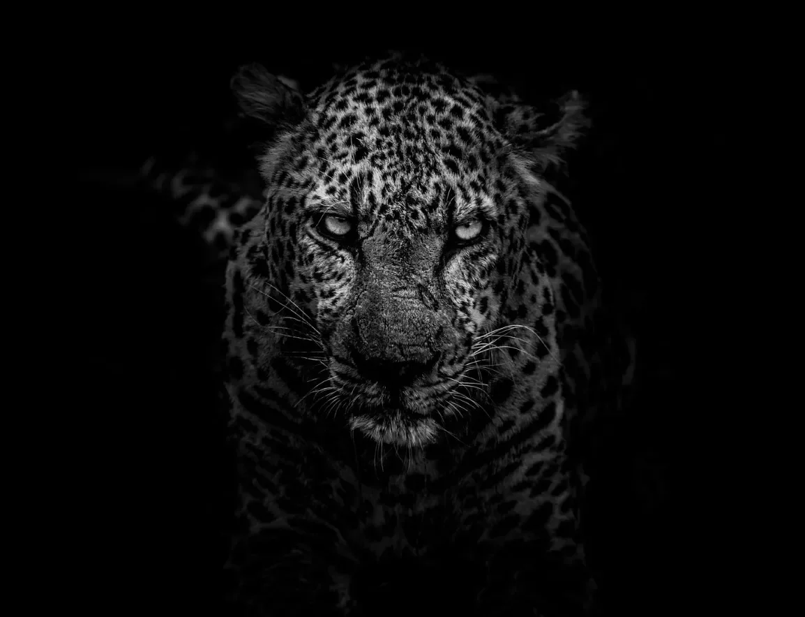

인생에서 정말 엄청난 실수를 했다는 걸 깨닫는 순간들이 있는데, 화가 난 표범의 눈을 쳐다보는 것은 확실히 그 중 하나다.
물론 내 인생에서 의심스러운 선택들이 꽤 있었지. 폴리에스터 바지를 입고 칠면조를 튀기려 했던 그 때, 아니면 할머니 의치 크림을 순간접착제로 바꾸는 게 웃길 거라고 생각했던 그 때 같은 거 말이야. 하지만 이건? 이건 케이크와 아이싱, 그리고 빵집 전체를 훔쳐가는 거나 마찬가지야.
[There are moments when you realize you’ve royally screwed up, and staring into the eyes of a pissed-off leopard is definitely one of them.
I mean, sure, I’ve had my fair share of questionable life choices – like that time I tried to deep-fry a turkey while wearing polyester pants, or when I thought it’d be hilarious to replace my grandma’s denture cream with superglue. But this? This takes the cake, frosting, and the entire bakery.]
여기 내가 있네, 자연의 완벽한 살인 기계와 마주하고 있는데, 내가 생각할 수 있는 건 “제발 ‘제퍼디!'를 녹화해 뒀길 바라"라는 거야. 표범의 눈은 내 영혼에 구멍을 내고 있어, 아마 내 장기 중 어떤 게 제일 맛있는 애피타이저가 될지 고민하고 있겠지. 비장이 될 거라고 내 돈 걸어 봐 - 고급스럽게 들리잖아, 마치 잘난 척하는 프랑스 식당 메뉴에서 볼 법한 그런 거 말이야.
[Here I am, face-to-face with nature’s perfect killing machine, and all I can think is, "Gee, I hope I remembered to TiVo 'Jeopardy!’” The leopard’s eyes are burning holes into my soul, probably deciding which of my organs would make the tastiest appetizer. I’m betting on the spleen – it sounds fancy, like something you’d find on a menu at a pretentious French restaurant.]
숙취로 고생하면서 반쯤 보던 자연 다큐멘터리들이 다 기억나려고 애쓰고 있어. 내 몸을 크게 보이게 해야 할까? 죽은 척해야 할까? 스니커즈 바를 건네줘야 할까? 패닉에 빠진 나는 어색한 커트시로 타협했어, 분명히 내 싸우거나 도망가는 반응은 “구식 사회 예절로 포식자를 혼란스럽게 만들기"거든.
[I try to remember all those nature documentaries I half-watched while nursing hangovers. Should I make myself look big? Play dead? Offer it a Snickers bar? In my panic, I settle for an awkward curtsy, because apparently, my fight-or-flight response is "confuse the predator with outdated social etiquette.”]
표범은 고개를 기울이고 있어, 아마도 인간성의 명백히 결함 있는 표본을 먹는 게 칼로리 소모할 만한 가치가 있는지 고민하고 있는 거겠지. 거의 들리는 것 같아, “정말? 이게 먹이사슬 최상위야? 지구가 엉망진창이 되는 게 당연하네."라고 생각하는 게.
[The leopard tilts its head, probably wondering if it’s worth the calories to eat such an obviously defective specimen of humanity. I can almost hear it thinking, "Really? This is what’s at the top of the food chain? No wonder the planet’s going to hell in a handbasket.”]
우리가 계속 눈싸움을 하는 동안 - 그런데 말이야, 나는 완전히 이기고 있어, 대부분 눈을 깜빡일 만큼 겁에 질려서 그런 거지만 - 나는 이 순간으로 이어진 일련의 엄청나게 잘못된 결정들에 대해 생각하고 있어. 메모 해 둬: 다음에 트렌치코트 입은 수상한 남자가 세븐일레븐 뒤에서 “일생일대의 사파리 경험"을 제안하면, 그냥 거절하고 슬러피나 사 마셔.
[As we continue our staring contest – which, by the way, I’m totally winning, mostly because I’m too terrified to blink – I ponder the series of spectacularly bad decisions that led me to this moment. Note to self: Next time a sketchy guy in a trench coat offers you a "once-in-a-lifetime safari experience” behind a 7-Eleven, maybe just say no and get a Slurpee instead.]
표범의 수염이 씰룩거리고, 맹세컨대 얼굴에 비웃음의 유령이 보여. 좋아, 내가 고양이 사료가 되기 직전일 뿐만 아니라, 이 빌어먹을 것이 나를 비웃고 있어. 모욕감에 상처를 더하는 거에 대해 말해봐 - 아니면 이 경우에는, 난도질에 조롱을 더하는 거지.
[The leopard’s whiskers twitch, and I swear I see the ghost of a smirk on its face. Great, not only am I about to become cat chow, but the damn thing is laughing at me. Talk about adding insult to injury – or in this case, adding mockery to mauling.]
다가오는 파멸을 생각하고 표범무늬가 다시는 유행할 수 있을지 궁금해하면서(스포일러 경고: 아마 아닐 거야), 이게 엄청난 이야기가 될 거라는 생각이 들어. 내가 살아서 말할 수 있다면 말이야. 그리고 만약 못 한다면, 적어도 스타일 있게 죽을 거야 - 세상에서 가장 이국적인 헤어볼로.
[As I contemplate my impending doom and wonder if leopard-print anything will ever be fashionable again (spoiler alert: probably not), I can’t help but think this would make one hell of a story. You know, if I live to tell it. And hey, if I don’t, at least I’ll go out in style – as the world’s most exotic hairball.]
이제, 표범의 시선이 더 강렬해지면서, 이 순간의 부조리한 아름다움에 충격을 받았어. 점박이 무늬 털은 마치 별이 빛나는 밤하늘 같아, 만약 별이 검고 하늘이 너무 많은 담배 때문에 약간 누렇게 변했다면 말이야. 완벽한 살인 기계, 자연의 가장 멋진 모피 코트에 싸여 있어. 거의 시적이야, 정말로, 만약 시가 확실한 죽음에 직면한 아드레날린에 미친 미치광이들에 의해 쓰여졌다면 말이야.
[Now, as the leopard’s gaze intensifies, I’m struck by the absurd beauty of the moment. Its spotted coat is like a starry night, if stars were black and the sky was slightly yellowed from too many cigarettes. The perfect killing machine, wrapped in nature’s most fabulous fur coat. It’s almost poetic, really, if poetry was written by adrenaline-crazed lunatics facing certain death.]
위대한 탐험가들은 다 이런 기분이었을까 - 표범의 점심이 되기 직전에 말이야. 리빙스턴도 이런 생각을 했을까? 어떤 큰 고양이가 저녁 식사로 그를 재면서 그의 상황의 우주적 아이러니에 대해 생각하고 있었을까? 아마 아닐 거야. 그는 아마 실제로 용감하거나 똑같이 지루한 일에 너무 바빴을 거야.
[I wonder if this is how all great explorers felt – you know, right before they became leopard lunch. Did Livingstone have these thoughts? Was he pondering the cosmic irony of his situation while some big cat sized him up for dinner? Probably not. He was probably too busy being actually brave or something equally boring.]
표범이 앞으로 한 걸음 내디뎠고, 맹세컨대 배경에서 '죠스’ 테마가 연주되는 게 들려. 아니면 그건 그냥 내 심장 소리일지도 몰라, 고양이 애피타이저가 되기 전에 가슴에서 탈출하려는 거지. 잠시 짐승에게 내 시계를 제공하는 걸 고려해 봤어 - 시간을 벌기 위해서 말이야 - 하지만 그게 시간 엄수에 관심이 있을 거라고는 의심스러워.
[The leopard takes a step forward, and I swear I can hear the 'Jaws’ theme playing in the background. Or maybe that’s just my heart, trying to escape my chest before it becomes a feline appetizer. I briefly consider offering the beast my watch – you know, to buy some time – but I doubt it has any interest in punctuality.]
내 인생이 눈앞을 스쳐 지나가는데, 대부분 재방송이라는 걸 발견하고 실망했어. 이 정확한 순간을 준비할 수 있었을 텐데 리얼리티 TV 정주행으로 낭비한 그 모든 시간들. 누가 알았겠어 “서바이버"가 그렇게 문자 그대로일 수 있다는 걸.
[As my life flashes before my eyes, I’m disappointed to find it’s mostly reruns. All those wasted hours binge-watching reality TV when I could have been preparing for this exact moment. Who knew "Survivor” could have been so literal.]
이제 표범의 숨결이 내 얼굴에 뜨겁게 느껴져, 약간 민트와 공포 냄새가 나. 큰 고양이들이 리스테린을 쓰는지 아니면 그냥 내 임박한 최후의 냄새인지 궁금해. 어느 쪽이든, 나는 그것의 구강 위생에 감명받았어. 적어도 그들이 내 유해를 발견했을 때, 그들은 “그는 훌륭한 구강 관리 습관을 가진 표범에게 먹혔다"라고 말할 수 있을 거야.
[The leopard’s breath is hot on my face now, smelling vaguely of mint and terror. I wonder if big cats use Listerine or if that’s just the scent of my impending demise. Either way, I’m impressed with its dental hygiene. At least when they find my remains, they’ll be able to say, "He was eaten by a leopard with excellent oral care habits.”]
마지막 노력으로 나 자신을 구하기 위해, 표범과 이성적으로 대화해 보는 걸 고려해 봐. 어쩌면 우리가 어떤 종류의 합의에 도달할 수 있을까? 내가 그것의 에이전트가 되어 주겠다고 제안할 수 있어, 몇 가지 모델 일을 따내 주는 거지. 그 점박이 무늬와 골격으로, 패션계의 차세대 스타가 될 수 있을 거야. 비켜, 카다시안 가족들 - 표범 시크가 왔다.
[In a last-ditch effort to save myself, I consider trying to reason with the leopard. Maybe we can come to some sort of agreement? I could offer to be its agent, get it some modeling gigs. With those spots and that bone structure, it could be the next big thing in the fashion world. Move over, Kardashians – here comes Leopard Chic]
큰 고양이의 근육이 긴장하면서, 덮치기 위해 준비하자, 나는 눈을 감고 충격에 대비해. 만약 이게 끝이라면, 적어도 파워포인트 프레젠테이션으로 죽거나 케일 스무디를 먹다 질식사하는 건 아니야. 표범에게 물려 죽는 거? 그건 내세에서 쿨한 아이들 클럽에 들어갈 수 있는 종류의 퇴장이야.
[As the big cat’s muscles tense, ready to pounce, I close my eyes and brace for impact. If this is how it ends, at least it’s not death by PowerPoint presentation or choking on a kale smoothie. Being mauled by a leopard? That’s the kind of exit that gets you into the cool kids’ club in the afterlife.]
그리고 누가 알아? 어쩌면 다음 생에서, 나는 표범으로 다시 태어날지도 몰라. 그거 참 반전이겠지? 내 현재 자아의 환생을 찾아내서 그들을 제대로 놀라게 해 주는 걸 목표로 삼을 거야. 옛날 생각나서 말이야. 왜냐하면 이 경험에서 내가 배운 한 가지가 있다면, 그건 인생이 너무 짧아서 자연의 완벽한 포식자와 좋고, 무서우면서, 잠재적으로 치명적인 눈싸움을 음미할 수 없다는 거니까.
[And who knows? Maybe in my next life, I’ll come back as a leopard. Wouldn’t that be a twist? I’d make it a point to find the reincarnation of my current self and give them a good scare. You know, for old times’ sake. Because if there’s one thing I’ve learned from this experience, it’s that life’s too short not to appreciate a good, terrifying, potentially fatal staring contest with nature’s perfect predator.]